This serves as a collection of some of my favorite photos I've taken. I love to capture the beauty of my home state of Colorado, but I equally enjoy traveling all around the world and highlighting the uniqueness of each place through my own perspective. I especially enjoy portraying the feeling and emotion of a moment, which I've been exploring in the form of videography recently. A TikTok account showcasing some of this videography can be found at @a.b.lynne.
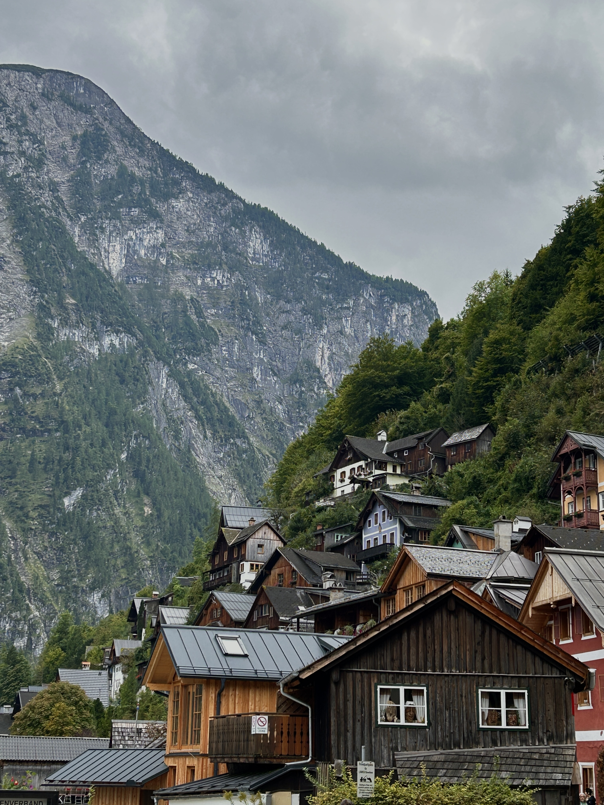
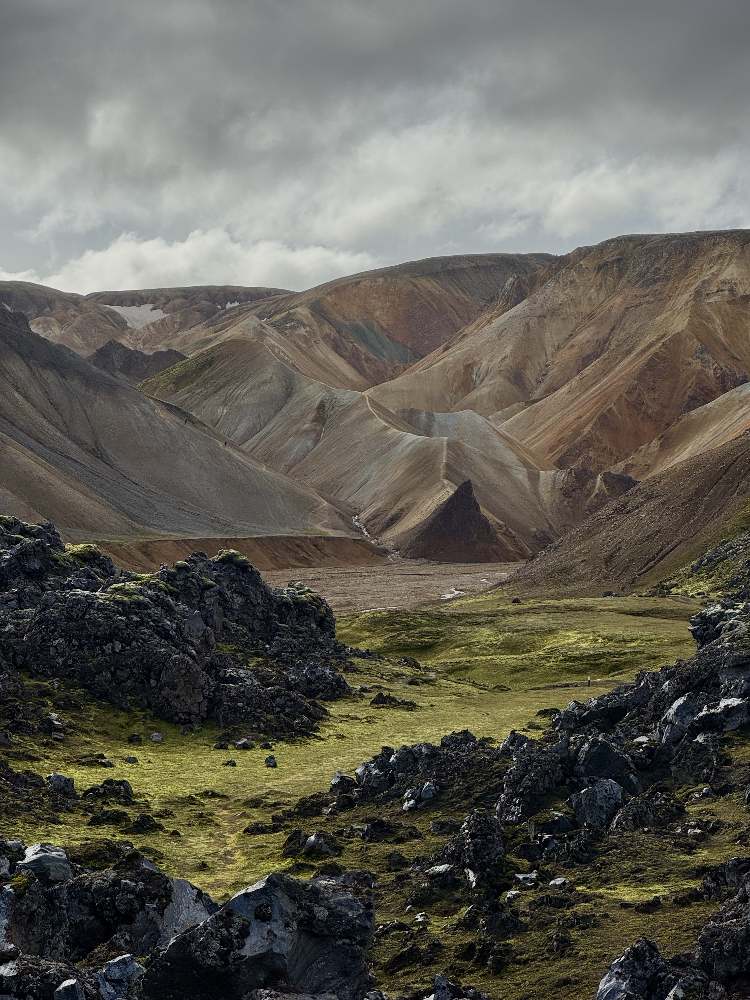
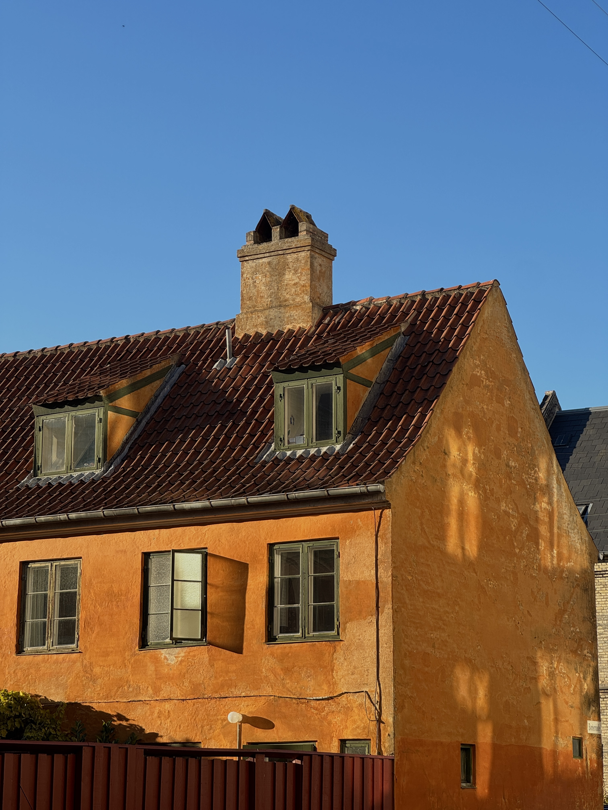
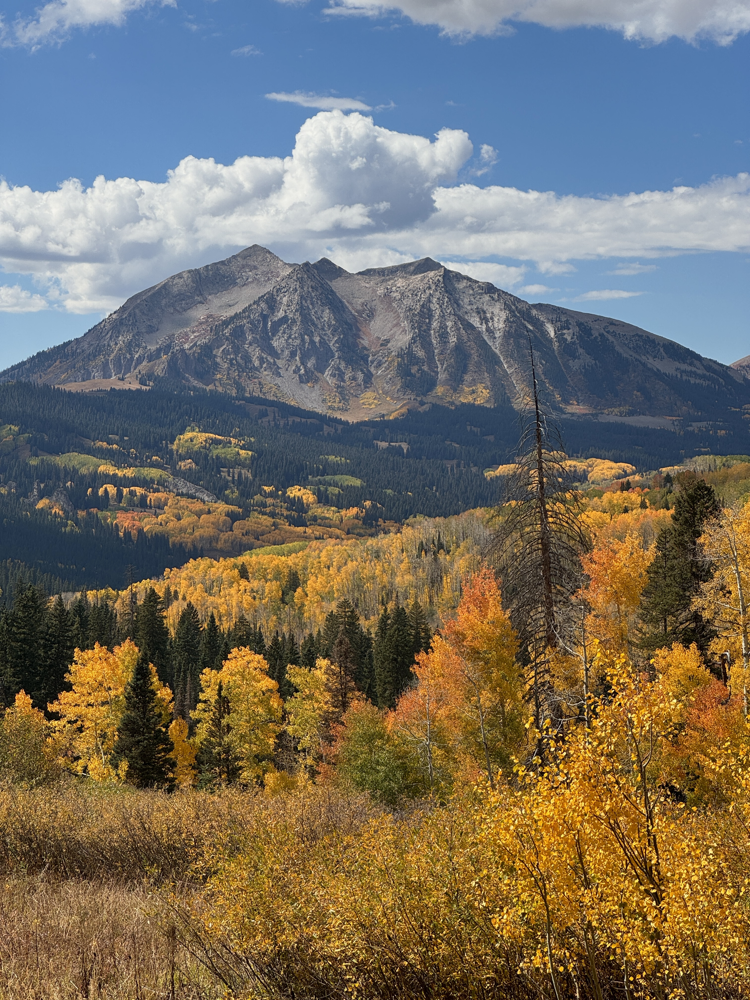
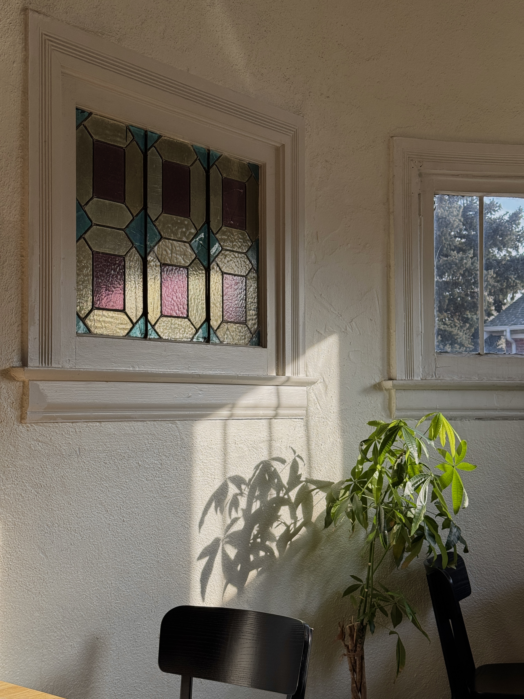
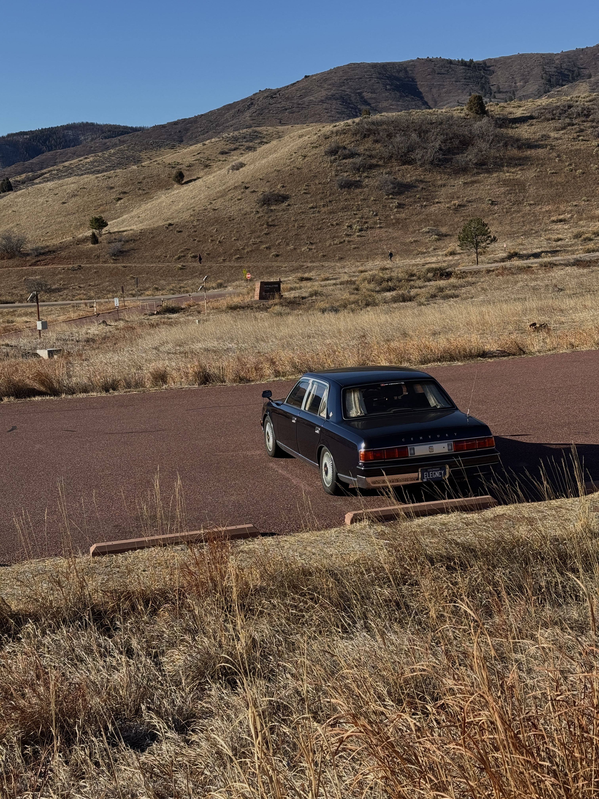
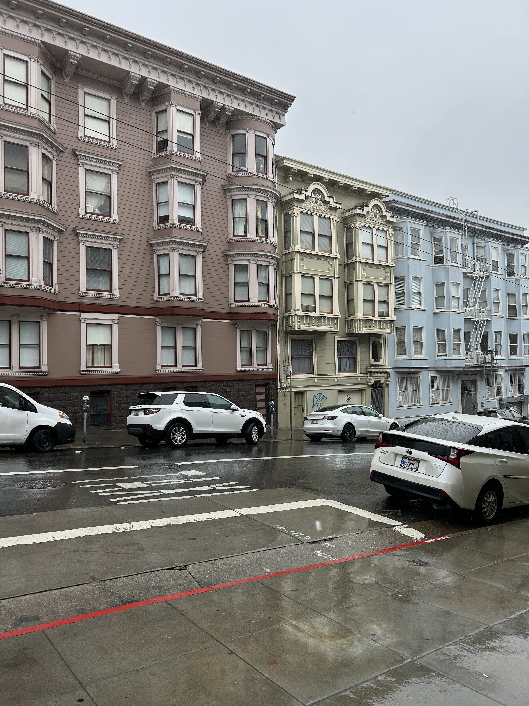
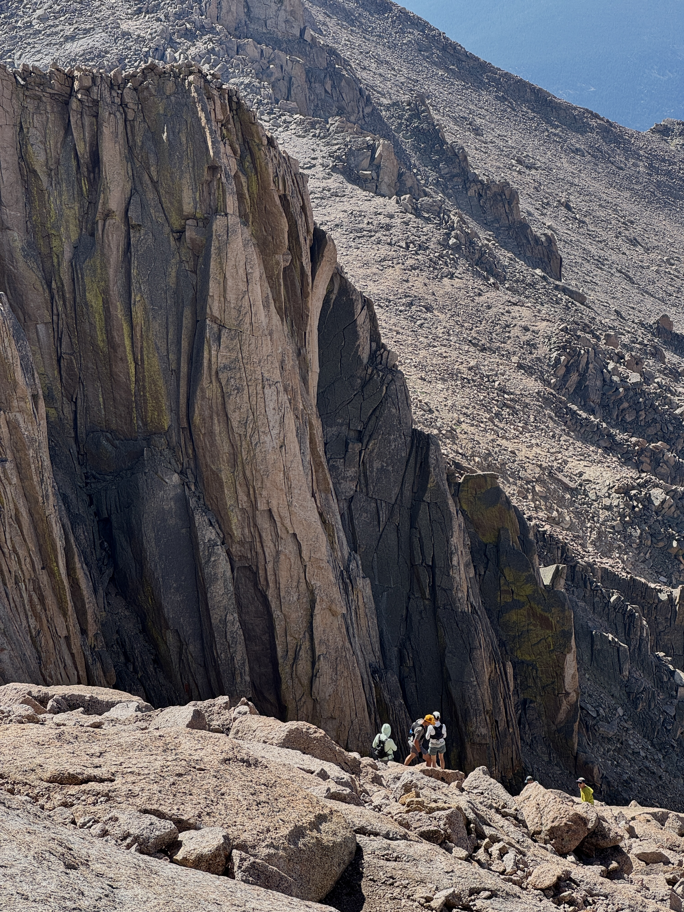
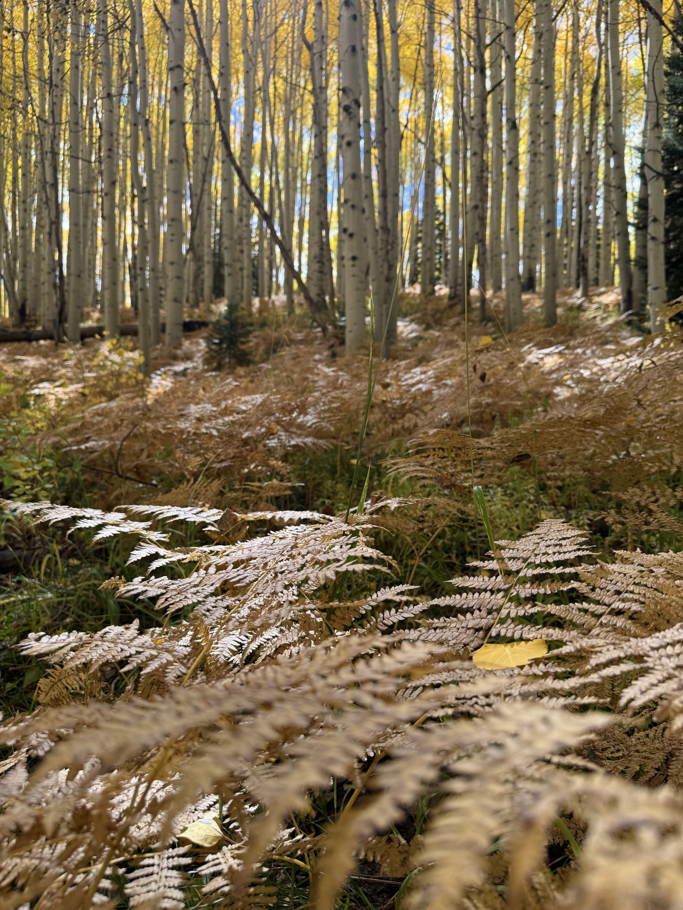
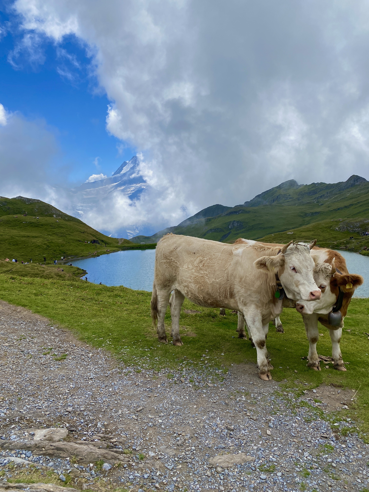
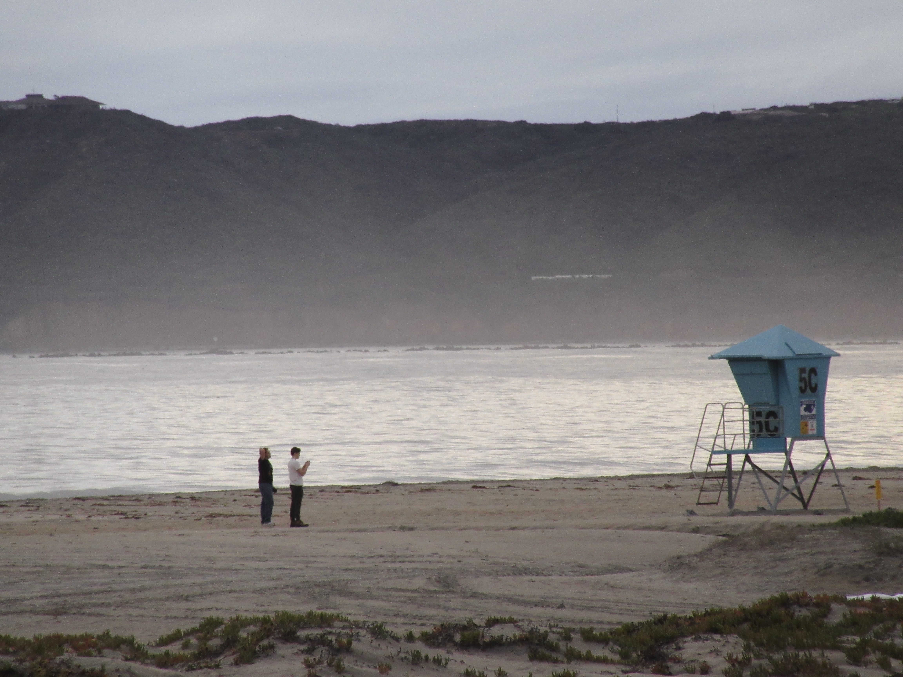
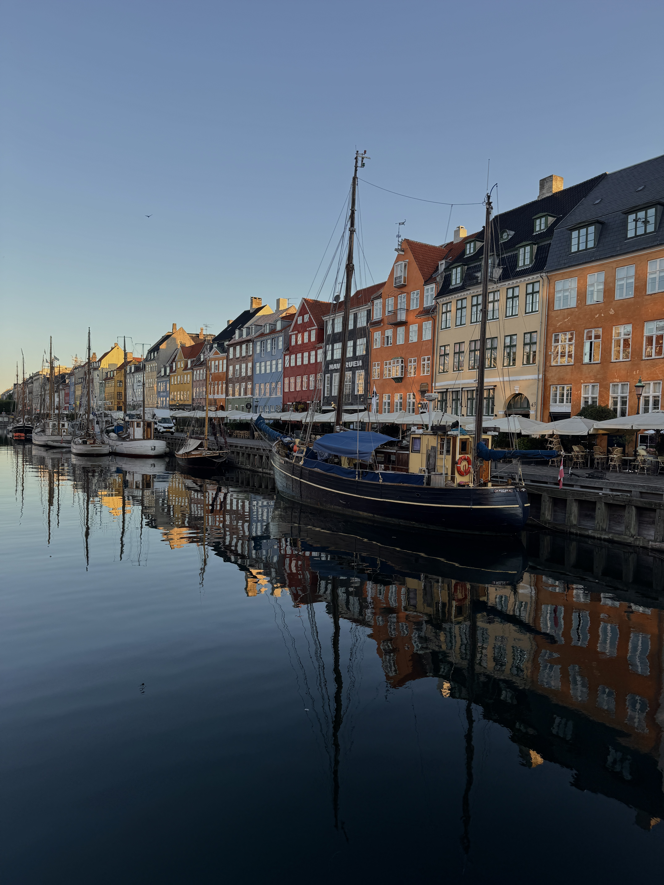
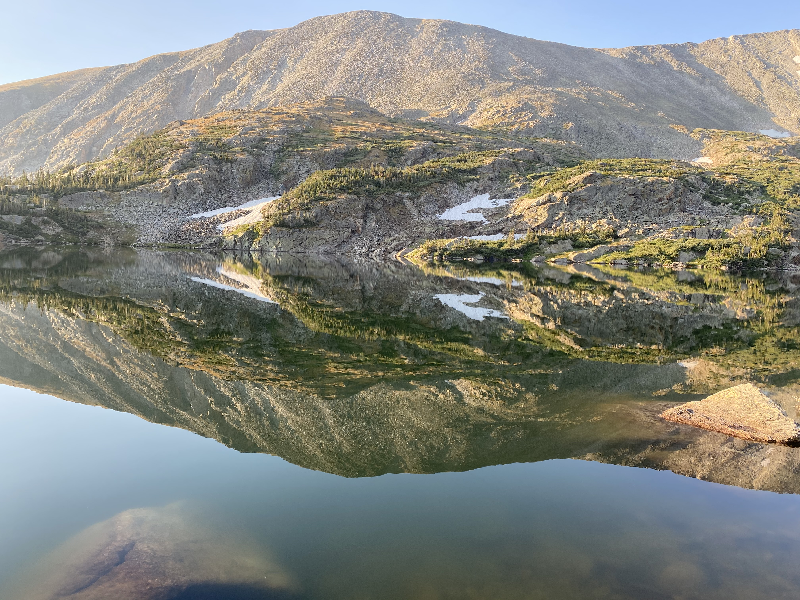
← Back to Home